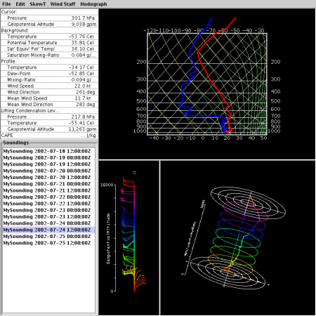

- Executable Name: Mesonet_Text_Report
- CVS loc: apps/cidd/src/MetarSelect
- Required Input: Station Report SPDB data
- Notes: Has options for Metric, English
|
The decoded METAR text program displays metar data in tabular form, sorted by distance
from the click point.
To update the window, select the desired METAR station by clicking in the main display window close to the METAR station of interest. The METAR text window will be updated with the latest reporting METAR information for that station and nearby stations. The closest station will appear at the top of the list. The data is in time-reverse order with the latest observations at the top. | |
| |
| |
The Mesonet text window displays data from the local, high resolution precip gauges. The data on this window updates every minute, providing the most up-to-date data on the screen. |
| |
 |
The Snow and Precip text window displays traces of radar intensity (YELLOW)
and Precipitation accumulation at a station of choice. Place the mouse cursor in the
window and press and hold the right button to pop up a station choice menu.
The plot is a scrolling time display, with the current time indicated by a red vertical line. To the left of the Now line, solid lines should appear which represent measured, actual data. The dotted lines on the right represent the current prediction for both the radar return over the gauge as well as how much precipitation (liquid equivalent) will fall into the gauge. The Radar updates every 6-10 minutes, while the gauge data update every 1-2 minutes. New radar and precip predictions are updated every 6-10 minutes. |
| |
| This program displays data traces, plotted over time of METAR and Surface stations. To change the field, right-click to display the menu and select the desired field. To view all parameters from a single station, right-click to display the menu and select a Station Identifier. | |
| |
 |
This program will also plot stations closest to the click point. When configured to do this, the display will display the closest N stations, sorted in order of their distance from the chosen point. |
| |
| This program produces synthetic (Model Based) Sounding plots at points above cursor clicks. SoundingText queries the model output and produces a class file which SoundingPlot.py reads and produces a plot. This same mechanism can be used to drive other favorite Sounding Plotting tools. | |
| |
| This program Displays raw Metars, sorted by distance
from the click point.
To update the window, select the desired METAR station by clicking in the main display window close to the METAR station of interest. The METAR text window will be updated with the latest reporting METAR information for that station and nearby stations. The closest station will appear at the top of the list. The data is in time-reverse order with the latest observations at the top. | |
| |
| This program Displays Winds and Temperatures Aloft, above the click point in
tabular form.
To update the window, click in the main display window at the point of interest. The Winds Aloft text window will be updated with the latest model data, displayed in tabular form. | |
| |
| This program Displays raw Terminal Area Forecasts (TAFs), sorted by distance
from the click point.
To update the window, select the desired Airport station by clicking in the main display window close to the Airport of interest. The text window will be updated with the latest TAF information. for that station and nearby stations. The closest Airports will appear at the top of the list. | |
| |
| This program Displays raw AIREPS, sorted by distance
from the click point.
To update the window, select the desired area by clicking in the main display window close to the area of interest. The text window will be updated with the latest reporting AIREP information. | |
| |
| Web Browsers are used to display supplementary information, especially help documents and live system monitors. They are also used to display the output from CIDD, which can be configured to produce imagery in batch mode, or interactively, through a remote command queue. | |
| |
| Titan's analysis plots and displays will directly interface with CIDD in much the same way they do with Rview. See the TITAN documentation for more details on the real-time Storm analysis package. | |
| |
|  | A 3-D Java Application which plots Soundings and allows the user to rotate the hodograph in real-time. This tool also allow the user to interactively edit the data, changing the graphs. This application requires Java 3-D to be installed on the host system. Java 1.4.0, very specific video cards and their drivers are necessary. |
| |
| A CIDD Draw tool plugin Program. This plugin allows the user to modify and exclude areas within a mdv file. The user selects areas and then chooses to excise data inside or outside of the defined area. | |
| |
| A CIDD Draw tool plugin Program. This plugin allows the user to enter human inserted Gust Fronts and Boundries. useful for entering truth and entering features too weak for the automated algorithms. | |
| |
| GridPointSelect is a small program that enables the display of data in ascii format based on CIDD click points. It is typically run in an xterm. The user gives a list of MDV url sources, and every time the user clicks in the CIDD window data from these sources are displayed. The user has the option of defining a volume to consider. From this volume the user can select the display of the minimum, maximum or mean value. Niles Oien June 2003. | |
| |
| SoundingChart is a program which plots Model soundings and observed soundings together on the same plot. Right click on the image to pop up a configuration panel | |
| |
| EventMan is a program which is used to manage Weather Events. This plugin will send CIDD and other display plugins to the time of the event, as well as preventing the data janitor from scrubbing data for this event off of the local disk. | |
| |
| ciddArchiveDriver can be used to produce a script that will run CIDD in such a way as to produce a series of images. | |
| |